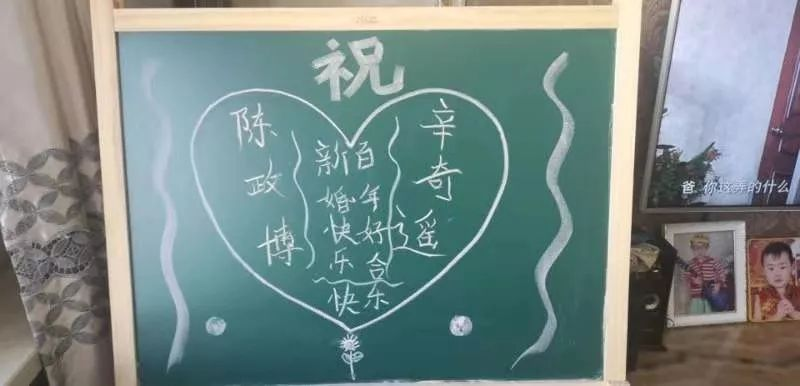
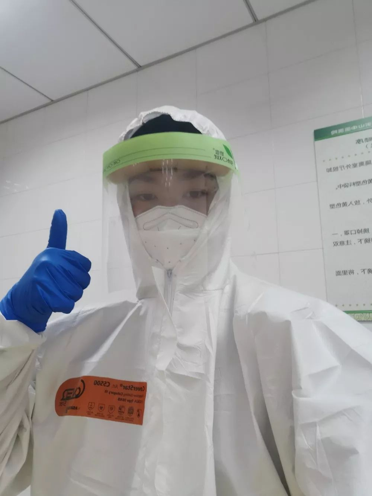

口述实录 | 我“困”在武汉100公里外的“重灾区”荆州
原文链接 备份链接 我们在郊区，离洪湖市区大概还有8公里左右，再加上春节期间置办了许多年货，蔬菜都是自家地里摘，所以基本上吃饭没有太大问题。 口述 | 余 光 整理 | 陈 冰 1月18日，儿子放寒假的第一天，我们一家三口开了14个小时的 …
今天是情人节。而不久之前，身份都是医生的陈政博、辛奇遥，选择先在家人微信群中举行了特别的视频婚礼。
这对战疫一线的新人终成眷属，陈政博说，待疫情结束，春暖花开，他会给妻子再补上一场最浪漫的婚礼。
口述 | 陈政博
整理 | 应 琛
如果没有春节前这场突如其来的疫情，我现在应该刚和妻子度完蜜月回来。但现在非但蜜月没去成，我们原定在2月2日举行的婚礼也取消了。但这是我们一起做的决定，婚礼的意义就是希望大家见证幸福，如果亲友带着担心到来，那婚礼也就失去了原本的意义。
我和妻子是大学同学。毕业后，我俩都留在上海。我现在在天山中医医院内科工作，妻子则是在徐汇区一家社区医院当全科医生。
恋爱多年后，我们在上海买了房，终于在去年8月领了结婚证。从那个时候开始，两家人也就积极筹备起婚礼来。

陈政博和妻子辛奇遥研究生毕业时的合影
因为都是学医的，所以当时相关消息一出来的时候，我俩就有所警惕了。但因为我家情况比较特殊，我父亲是温州人，我母亲是内蒙古人，他们又长期在新疆做生意。而我妻子家是山西人。等于双方的亲朋好友从全国各地到上海，要把人凑齐不容易，所以很早我们就发出了邀请。虽然过程中也有一些亲友提出过担忧或是打电话来询问还办不办，一直到1月10日左右，我们都还告知他们会如期举行。
但随着疫情的发展，我开始觉得取消婚礼是很有必要的，就怀着忐忑的心情和妻子透露了自己的想法。毕竟，这次婚礼是我们期待了很久的。我还设想了很多理由来说服她。没想到，还没等我开口，妻子就表达了同样的想法。我们都觉得，应该要响应国家的号召，尤其身为医生，这个时候强行举办婚礼，是一种不负责任的表现。
既然和妻子达成了一致，接下来就是说服双方的父母。1月19日，我们的父母各自从外地来到了上海，原来是想最后再合计一下婚礼的相关事宜。但第二天，我们却告诉他们要取消婚礼。他们当时是有些顾虑的，毕竟已经花了不少钱，婚礼取消的话不知道造成多少损失，再有亲戚朋友都已经定了机票和酒店。
但最终，在我和妻子的坚持下，我俩也给他们看了一些相关报道，科普了这个冠状病毒的危害性。双方父母最终还是同意了。我父亲还主动承担下通知亲友的“任务”，亲朋都是比较理解的。好在后面相关的政策都出了，机酒这些都可以全额退还。我们也就心安了，没让他们承担什么损失。
决定取消婚礼后，陈政博发了一条朋友圈
想到医院可能缺人手，我主动打电话给领导，告诉他们我可以回来继续上班，顺便也把婚假取消了。我妻子亦是如此。
但说实话，我俩心里还是有些许遗憾。某天我俩坐在沙发上看电视，一算2月2日，我俩都是休息。也记不清是谁先起的头，就说要不还是搞个小小的仪式吧，也算是我们正式结婚了。
2月2日那天，我们便在家人微信群中举行了一场特别的视频婚礼。因为微信只支持9人的在线视频。当时，出席名单也商议了好久。因为婚礼取消，我父母后来是回了温州老家过年。她父母在上海和我们一起过年。所以，我父母占了一个，还有就是我的叔叔一家，她的表哥，还有我们的朋友等等。

视频婚礼
“从今以后，无论安乐困苦，富足贫穷，有病无病，我都爱护你，尊重你，直到终身”，我俩宣读了婚礼誓词，紧紧抱在了一起。而视频那头响起了掌声，久久未息。

家里亲戚送来的祝福
后来，我所在医院成了发热门诊的指定医院，发了通知希望我们相关科室的医生可以去支援发热门诊，我也主动请缨。
2月11日，是我第一个在发热门诊的白班，从8点到20点。第一次穿着全套防护服，戴上口罩和护目镜给病人看病，这才感受到了新闻中报道的那种难受。因为防护服很密闭，不透风，我能明显感到汗在往下淌，而戴着口罩不仅很勒，说话都很费劲。更重要的是，为了减少物资损耗，12小时里我和同事都没喝水，没上过厕所。
那一天，我大概看了二三十个病人，基本上都是普通感冒。但我能明显感受到他们普遍的焦虑和紧张。我不仅要看他们身体上的疾病，更多的还要疏解他们心理的不安。

陈政博在工作中
有两个病人，我印象特别深。一个是年轻的外卖小哥，他完全没有症状，以至于我连医嘱都不知道怎么写。来看病，只因为听说他住的隔壁小区有一例新冠肺炎确诊，想来排除一下。关键是他都没有去过那里。我给他普及了一下相关知识后，小哥还算比较能接受，走的时候也松了一口气。还有一个是60多岁的阿姨，也是没什么症状，血检后指标也都很正常。但她偏偏不信，强烈要求要拍CT和做核酸检测。我跟她说做这些检查都是要有标准的。阿姨一听，原本没有的症状都有了，说她头晕，乏力，还咳嗽……
其实，我想说，我们每个人只要做好了基本的防护，少外出，在家勤洗手。上海还是很安全的，没有必要过分焦虑和担心。
身体和精神的双重压力下，记得当天下了班，我直接就打了车回到家，倒头就睡了。
我现在比较担心的是我父母。大家都知道，温州目前也是疫情重点地区。听说他们住的小区里就有了确诊病例。现在每天我都会和他们通电话了解情况。好在他们身心各方面都还不错，能做到尽量不出门。
而我妻子在春节期间也去了上海南站支援，在那种人员密集场所，尤其是返沪人员比较多的地方，说实话我真的很舍不得。
“穿好防护服，再难受也不能摘下口罩！”“有空了就多喝点水，勤洗手！”……每天出门上班前，我们俩对彼此的这些“碎碎念”瞬间就成了最动听的语言。

武汉加油！
尽管很累，但疫情形势严峻，治病救人是医生的天职，我们责无旁贷。而我能和最爱的人一起并肩阻击疫情，也特别有意义。
等到疫情结束，春暖花开，我一定会给妻子一场最浪漫的婚礼。

征集令
《新民周刊》现面向全国征集新冠肺炎采访对象和真实故事：
如果你是参与抗击新冠肺炎疫情的医护人员或其家属，我们希望聆听你的“战疫”故事，也希望传达你的诉求。
如果你是确诊、疑似患者本人或家属，我们希望了解你和家人如何“抗疫”的过程，让外界了解你的真实经历。
如果你是疫情严重地区的普通市民，我们希望展现你的乐观，并倾听你所需的帮助。
如果你是公共服务人员或各类捐助者，我们希望看到你的“最美逆行”，记录下你的无私。
……
抗击新冠肺炎疫情，我们诚征对疫情了解的社会各界人士，提供相关线索，说出你的故事，让我们用新闻留存这一切。
《新民周刊》新冠肺炎线索征集值班编辑联系方式（添加时请简要自我介绍）：
周一：应 琛 微信号：paulineying0127
周二：金 姬 微信号：gepetta
周三：黄 祺 微信号：shewen-2020
周四：周 洁 微信号：asyouasyou
周五：孔冰欣 微信号：kbx875055141
周六：吴 雪 微信号：shyshine1105
周日：姜浩峰 微信号：jianggeladandong
新闻是历史的底稿，你们是历史的见证者。
期待你的故事、你的线索！

▼
大家还都在看这些
▼
转载请在评论区留言，获得授权！
转载时，须注明作者、出处和微信号


原文链接 备份链接 我们在郊区，离洪湖市区大概还有8公里左右，再加上春节期间置办了许多年货，蔬菜都是自家地里摘，所以基本上吃饭没有太大问题。 口述 | 余 光 整理 | 陈 冰 1月18日，儿子放寒假的第一天，我们一家三口开了14个小时的 …
原文链接 备份链接 我也是个普通人，也会恐惧。但我是一名医务工作者，同时是一名党员；我们黄冈的疫情是全国城市里除武汉之外最重的几个之一，这样的困难情况下，我们不去，谁去？必须要坚持，一定要挺住。 口述 | 陈 林 整理 | 王 煜 我是湖 …
原文链接 备份链接 平时生活节奏太快，就像开车开到120码，突然停下，大家都不适应。 口述 | 严 欣 **整理 | 王仲昀** 很多温州人在外经商，每到春节就要回老家过年，我们一家是年前从上海回来的。 全国人民都在新闻中看到，约18万温 …
原文链接 备份链接 我想说，我们再困难也会响应政府号召，去打赢这场新冠肺炎病毒阻击战！ 口述 | 李安定 整理 | 金 姬 我是70后上海人，生于斯长于斯。大学毕业之后的十几年间，我主要从事机电设计顾问方面的工作，在美资、港资和内地几家大 …
原文链接 备份链接 我住在汉口，是这次疫情的重灾区。那个被查出疫情源头的华南海鲜市场，就在火车站对面，离我家大概20公里。我希望疫情早日结束，对我们国家的经济影响小一些，所有人都能够平安和健康。 口述 | 小 玲 整理 | 沈 林 我叫小 …